Mediation
Professor Andy Field
University of Sussex


|
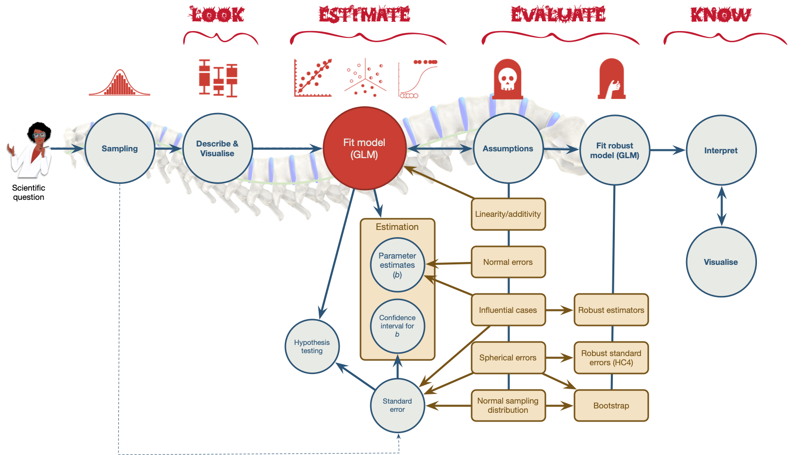
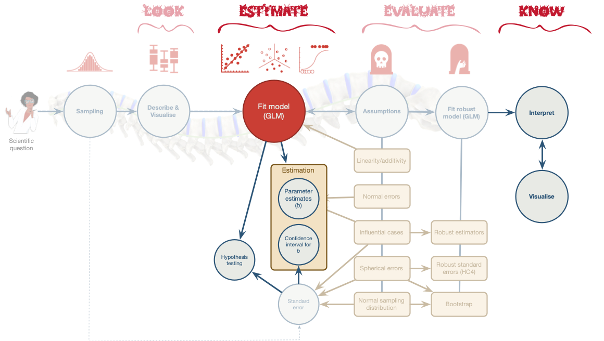

Does AI-use reduce critical thinking?1
- 669 participants (666 considered ‘valid’ 👿)
- Measures
- AI-tool usage (
ai) - Cognitive offloading (
cog_off): externalisation of cognitive processes, often involving tools or external agents, such as notes, calculators, or digital tools like AI, to reduce cognitive load. - Critical thinking (
crit: the capacity to think clearly and rationally, understand logical connections between ideas, evaluate arguments, and identify inconsistencies in reasoning
- AI-tool usage (
Think about it!
Hypotheses
- H1: Higher AI tool usage is associated with reduced critical thinking skills.
- H2: Cognitive offloading mediates the relationship between AI tool usage and critical thinking skills.
Measures
- AI-tool usage
- 5 items (1 = not at all/strongly disagree, 6 = always/strongly agree)
- How often do you use AI tools
- To what extent do you rely on AI tools for decision-making?
- I often cross-check information provided by AI tools with other sources
- Cognitive offloading
- 5 items (1 = not at all/strongly disagree/unlikely, 6 = always/strongly agree)
- How often do you use search engines like Google to find information quickly?
- When faced with a problem or question, how likely are you to search for the answer online rather than trying to figure it out yourself?
- Critical thinking
- 8 items (1 = not at all/strongly disagree, 6 = always/strongly agree)
- How often do you critically evaluate the sources of information you encounter?
- I question the assumptions underlying the information provided by AI tools
Mediation: the conceptual model
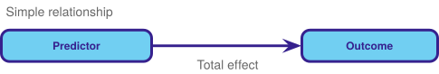
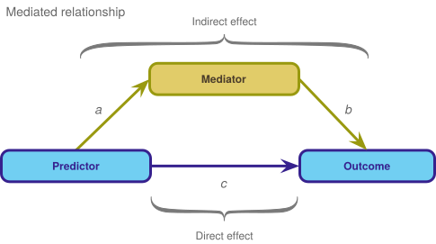
Key points
Mediation is when the relationship between a predictor and outcome can be explained by their relationship to a third variable.
- The total effect between a predictor and outcome can be broken down into:
- The direct effect, which is the relationship between the predictor and outcome adjusting for the mediator (path c)
- The indirect effect, which is the relationship between the predictor and outcome via for the mediator (path ab)
- The indirect effect quantifies mediation
\[ \begin{aligned} \text{Total effect} &= \text{Direct effect} + \text{Indirect effect} \\ \text{Total effect} &= c + (a \times b) \end{aligned} \]
Mediation in practice
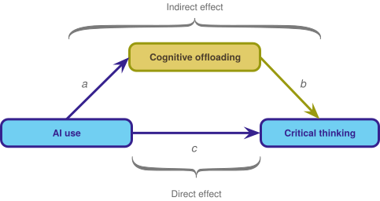
\[ \begin{aligned} \text{Total effect} &= \text{Direct effect} + \text{Indirect effect} \\ \text{Total effect} &= c + (a \times b) \end{aligned} \]
Load and Look
Visualize
How do we specify the model?
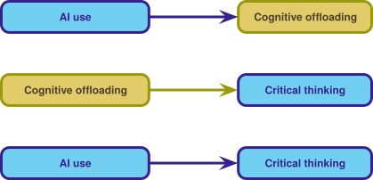
\[ \begin{aligned} \widehat{\text{Cognitive offloading}}_i &= \hat{a}\times \text{AI Use}_i \\ \\ \widehat{\text{Critical thinking}}_i &= \hat{b}\times \text{Cognitive offloading}_i \\ \\ \widehat{\text{Critical thinking}}_i &= \hat{c}\times \text{AI Use}_i \end{aligned} \]
Think about it!
Can we fit a series of regular linear models?
- Each relationship is treated as independent
- We want to adjust the relationship between AI use and critical thinking for cognitive offloading
- How?
How do we specify the model?
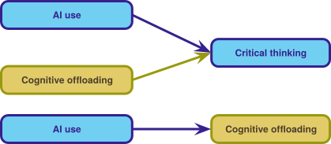
\[ \begin{aligned} \\ \\ \widehat{\text{Critical thinking}}_i &= \hat{c}\text{AI Use}_i +\hat{b}\text{Cognitive offloading}_i \\ \\ \\ \widehat{\text{Cognitive offloading}}_i &= \hat{a}\text{AI Use}_i \\ \end{aligned} \]
Think about it!
Can we fit a series of regular linear models?
- This gets us closer, because these models adjust the relationship between AI use and critical thinking for cognitive offloading, but …
- … the relationships between between AI use, cognitive offloading and critical thinking are treated as independent from the relationship between AI use and cognitive offloading
- The solution is to fit these models simultaneously using Structural Equation Modelling (SEM)
Path analysis
\[ \begin{aligned} \widehat{\text{Critical thinking}}_i &= \hat{c}\text{AI Use}_i +\hat{b}\text{Cognitive offloading}_i \\ \widehat{\text{Cognitive offloading}}_i &= \hat{a}\text{AI Use}_i \\ \\ \text{Total effect} &= \text{Direct effect} + \text{Indirect effect} \\ \text{Total effect} &= c + (a \times b) \end{aligned} \]
Fitting the model
Evaluate
Statis-tip
- As with other models, we can use
model_performance()to get fit statistics, but these will always show perfect fit (we are fitting what’s known as a saturated model). - We cannot use
check_model()to get diagnostic plots. - By using
estimator = "MLR"we have fitted a robust model.
Interpret parameter estimates, CIs and tests
| Link | Coefficient | SE | 95% CI | z | p | Label | Component |
|---|---|---|---|---|---|---|---|
| crit_think ~ ai | -0.22 | 0.08 | [-0.38, -0.05] | -2.59 | 0.010 | c | Regression |
| crit_think ~ cog_off | -0.33 | 0.09 | [-0.51, -0.15] | -3.52 | < .001 | b | Regression |
| cog_off ~ ai | 0.76 | 0.02 | [ 0.73, 0.79] | 50.54 | < .001 | a | Regression |
| Link | Coefficient | SE | 95% CI | z | p | Label | Component |
|---|---|---|---|---|---|---|---|
| indirect_effect := a*b | -0.25 | 0.07 | [-0.39, -0.11] | -3.52 | < .001 | indirect_effect | Defined |
| total_effect := c+(a*b) | -0.47 | 0.04 | [-0.54, -0.39] | -12.16 | < .001 | total_effect | Defined |
The fitted model
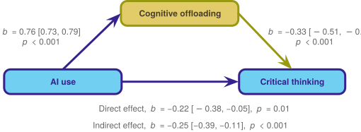
Standardized parameter estimates
| Link | Coefficient | SE | 95% CI | z | p | Label | Component |
|---|---|---|---|---|---|---|---|
| crit_think ~ ai | -0.20 | 0.08 | [-0.35, -0.05] | -2.63 | 0.008 | c | Regression |
| crit_think ~ cog_off | -0.27 | 0.08 | [-0.41, -0.12] | -3.52 | < .001 | b | Regression |
| cog_off ~ ai | 0.89 | 6.25e-03 | [ 0.88, 0.90] | 142.56 | < .001 | a | Regression |
| Link | Coefficient | SE | 95% CI | z | p | Label | Component |
|---|---|---|---|---|---|---|---|
| indirect_effect := a*b | -0.24 | 0.07 | [-0.37, -0.10] | -3.52 | < .001 | indirect_effect | Defined |
| total_effect := c+(a*b) | -0.44 | 0.03 | [-0.50, -0.38] | -14.74 | < .001 | total_effect | Defined |
The fitted model
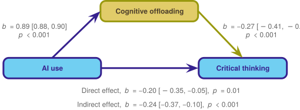
The squid of despair
Do AI use and cognitive offloading cause lower critical thinking?
The danger zone!
- NO!!! You cannot infer causality from these model
The theory of planned behaviour1
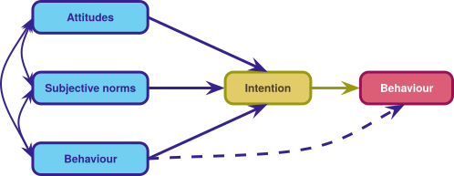
The theory of planned behaviour and AI1
- 610 participants
- AI-tool usage (
ai_use)- 1 item (high score = cheated more often)
- “How often have you used artificial intelligence like ChatGPT without indicating (i.e., not specifying that you used artificial intelligence) in the last 12 months for your seminar papers?” (never to > 5)
- Subjective norm (
norms):- 3 items (high score = fine to cheat)
- Most people who are important to me would look down on me if I used artificial intelligence without indicating it in a seminar paper (likely-unlikely)
- Intention to use AI (
intention)- 5 items (high score = greater intention)
- Even if I had a good reason, I couldn’t bring myself to use artificial intelligence in a seminar paper without indicating it (likely–unlikely)
Hypotheses
What can we predict from the theory of planned behaviour?
Think about it!
Hypotheses
- H1: Higher subjective norms are associated with greater AI usage (without declaring it).
- H2: Intention to use AI mediates the relationship between subjective norms and AI usage.
Load and Look
Visualize
The mediation model
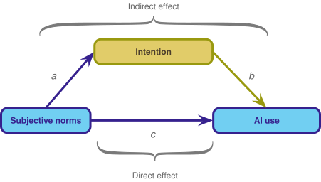
\[ \begin{aligned} \widehat{\text{AI use}}_i &= \hat{c}\text{Subjective norms}_i +\hat{b}\text{Intention}_i \\ \widehat{\text{Intention}}_i &= \hat{a}\text{Subjective norms}_i \\ \\ \text{Total effect} &= \text{Direct effect} + \text{Indirect effect} \\ \text{Total effect} &= c + (a \times b) \end{aligned} \]
Specifying the model
\[ \begin{aligned} \widehat{\text{AI use}}_i &= \hat{c}\text{Subjective norms}_i +\hat{b}\text{Intention}_i \\ \widehat{\text{Intention}}_i &= \hat{a}\text{Subjective norms}_i \\ \\ \text{Total effect} &= \text{Direct effect} + \text{Indirect effect} \\ \text{Total effect} &= c + (a \times b) \end{aligned} \]
Fitting the model
Evaluate
Statis-tip
- As with other models, we can use
model_performance()to get fit statistics, but these will always show perfect fit (we are fitting what’s known as a saturated model). - We cannot use
check_model()to get diagnostic plots. - By using
estimator = "MLR"we have fitted a robust model.
Interpret parameter estimates, CIs and tests
| Link | Coefficient | SE | 95% CI | z | p | Label | Component |
|---|---|---|---|---|---|---|---|
| ai_use ~ norms | 0.04 | 0.03 | [-0.02, 0.10] | 1.34 | 0.180 | c | Regression |
| ai_use ~ intention | 0.24 | 0.03 | [ 0.18, 0.30] | 8.02 | < .001 | b | Regression |
| intention ~ norms | 0.57 | 0.04 | [ 0.50, 0.64] | 15.05 | < .001 | a | Regression |
| Link | Coefficient | SE | 95% CI | z | p | Label | Component |
|---|---|---|---|---|---|---|---|
| indirect_effect := a*b | 0.14 | 0.02 | [0.10, 0.18] | 6.92 | < .001 | indirect_effect | Defined |
| total_effect := c+(a*b) | 0.18 | 0.03 | [0.12, 0.24] | 5.91 | < .001 | total_effect | Defined |
The fitted model
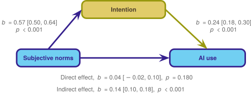
Standardized parameter estimates
| Link | Coefficient | SE | 95% CI | z | p | Label | Component |
|---|---|---|---|---|---|---|---|
| ai_use ~ norms | 0.05 | 0.04 | [-0.02, 0.13] | 1.37 | 0.170 | c | Regression |
| ai_use ~ intention | 0.34 | 0.04 | [ 0.27, 0.42] | 8.96 | < .001 | b | Regression |
| intention ~ norms | 0.52 | 0.03 | [ 0.46, 0.58] | 16.66 | < .001 | a | Regression |
| Link | Coefficient | SE | 95% CI | z | p | Label | Component |
|---|---|---|---|---|---|---|---|
| indirect_effect := a*b | 0.18 | 0.02 | [0.13, 0.22] | 7.75 | < .001 | indirect_effect | Defined |
| total_effect := c+(a*b) | 0.23 | 0.03 | [0.17, 0.30] | 7.12 | < .001 | total_effect | Defined |
The fitted model
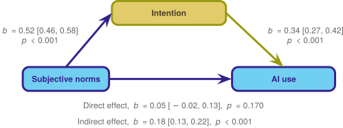
Summary
- Mediation is when the relationship between a predictor and outcome can be explained by their relationship to a third variable.
- The total effect between a predictor and outcome can be broken down into:
- The direct effect, which is the relationship between the predictor and outcome adjusting for the mediator
- The indirect effect, which is the relationship between the predictor and outcome via for the mediator
- We cannot infer causality from these models.